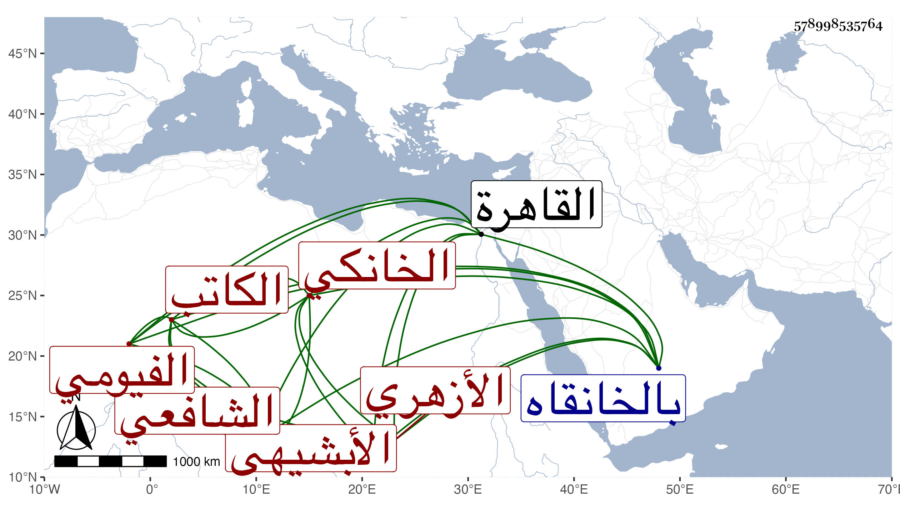

0902Sakhawi.DawLamic.ITO20230111-ara1.EIS1600.578998535764
Biography ID: 578998535764
786
عبد القادر بن محمد بن محمد الملقب صحصاح بمهملات بن محمد بن علي ابن عمر بن عثمان محيي الدين الأبشيهي نسبة لأبشيه الرمان من الفيوم الفيومي الأصل الخانكي الأزهري الشافعي الكاتب ابن أخي الماضي ، ويعرف بالأزهري وبالفيومي وبابن حرقوش . ولد تقريبا سنة ست وأربعين وثمانمائة بالخانقاه وحفظ القرآن وتلاه بالسبع وجود الكتابة على الشمس بن سعد الدين ويس وقرأ في العربية على أحمد بن يونس حين قدم القاهرة بل أخذ عن التقيين الشمني والحصني وبرع في العربية والفرائض والحساب والعروض والكتابة بل انفرد في وقته بالخط الرفيع وكتب الكثير وحج في سنة ست وتسعين رفيقا لأبن أبي الفتح ناظر جدة ثم تفاتنا ، كل ذلك مع كسله ومزيد فقره وقد اجتمع علي وأخذ عني وهو من النوادر ذكاء وانحرافا وتخيلا وبلغني إنه تعاطى حب البلادر .
